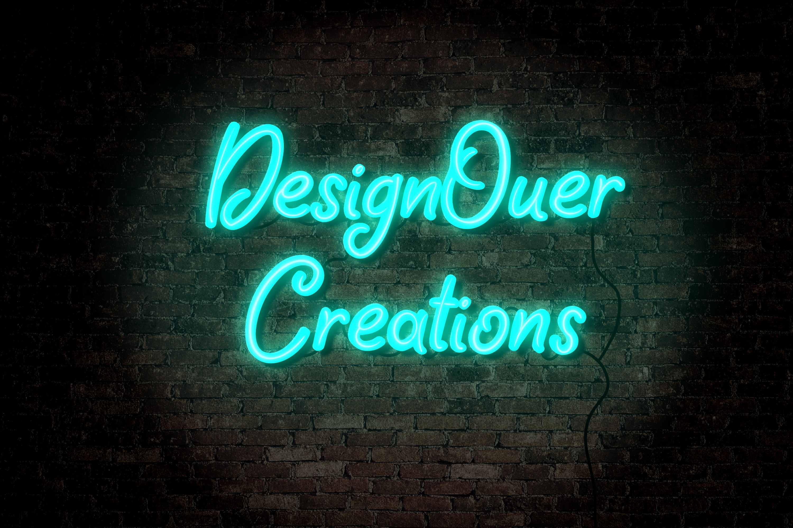

A little about me
Hello! My name is Rob below are listed a few of the things I enjoy doing. I was born in NJ still reside there, I'm always looking to find some time to go hatchet throwing or hangout and listen to music. My interest in getting into making websites has been something I have played with over time and trying it out, when I saw this opportunity I figured it was a sign to take a bigger step into the field.
Procreate
In my free time I like to put my headphones in and do a little drawing on Procreate on my iPad and follow YouTube tutorials to make small design projects. I hope to eventually be able to incorporate more of my own design work to add into websites for people.
Boxing

I started getting into Kickboxing when I was about seventeen and continued to do it well into my mid twenties then slowly mixed in Jiu-Jitsu. Boxing has become my stress reliever and a way to clear my mind when puzzled. It's my favorite way to keep myself in shape!
Gaming

Gaming has been a part of my life since I was a kid and still today I play them, I started with a super nintendo and worked my way to more current gen consoles from all the big platforms, favorite game will always be an elder scrolls game.